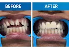

Metal-ceramic crowns, often called PFM, have been used for decades and remain a perfectly good option. Zirconia arrived more recently and now takes most of the work. Neither is simply better.
Metal-ceramic (PFM)
A metal shell with porcelain fused over it. The metal gives strength; the porcelain gives appearance.
Strengths: decades of clinical data, the most economical tooth-coloured option, reliable, and the metal margin seals well.
Weaknesses: the porcelain can chip off the metal underneath. Light does not pass through, so it looks slightly flat next to natural teeth. And as gums recede with age, a dark line appears at the gumline where the metal shows — the commonest reason people eventually want an old crown replaced.
Zirconia
Milled from a solid ceramic block by computer, with no metal anywhere.
Strengths: extremely strong — monolithic zirconia rarely chips — no dark line ever, biocompatible, and because of its strength it can be made thinner, so less healthy tooth has to be removed to make room for it. That last point is underrated: tooth structure you keep is tooth structure you keep for life.
Weaknesses: costs more. Plain monolithic zirconia can look slightly opaque on a front tooth, which is why front teeth usually get layered zirconia or lithium disilicate instead. It is also hard, so it must be polished properly or it can wear the opposing tooth.
Choosing by tooth
- Back molars — monolithic zirconia. Strength matters most, appearance least.
- Premolars — zirconia usually; visible enough to matter, loaded enough to need strength.
- Front teeth — layered zirconia or lithium disilicate, where translucency and shade matching decide the result.
- Long bridges — metal-ceramic still has a role, because the metal framework resists flexing across a span.
- On a budget — metal-ceramic on a back tooth is a sound, honest choice, not a compromise you should feel bad about.
What matters more than the material
The fit at the margin, and the dental laboratory. A superbly made metal-ceramic crown outperforms a poorly made zirconia one every time. Crowns rarely fail because the material was wrong; they fail because decay got in under an imperfect margin. When comparing quotes, the laboratory is the invisible variable that matters most.
Should you replace an old PFM crown?
Only if there is a reason: a dark line that bothers you, chipped porcelain, decay at the margin, or a poor fit. A sound, well-fitting crown that happens to be old is best left alone — replacing it means preparing the tooth again and losing a little more structure.
Frequently asked questions
Is zirconia stronger than a metal-ceramic crown?
Monolithic zirconia resists chipping better, because there is no porcelain layer to break away from a metal core. Both are strong enough for normal chewing; zirconia is the safer choice for heavy grinders.
Why does my old crown have a dark line at the gum?
That is the metal core of a metal-ceramic crown showing as the gum recedes slightly with age. It is cosmetic rather than harmful, and it is the usual reason people replace an otherwise sound crown.
Which crown is best for a front tooth?
Usually layered zirconia or lithium disilicate, because they transmit light like natural enamel. Plain monolithic zirconia is superb on molars but can look a little opaque at the front.
Does a zirconia crown require less tooth to be removed?
Generally yes. Its strength allows a thinner crown, so less healthy tooth structure needs preparing away, which is a real long-term advantage.
Talk to a dentist in Dehradun
Match the material to the tooth, and ask which laboratory makes it. If you would like this looked at, it is what we do every day at Vital Dental Care & Implant Center, Haripuram Colony, 2 GMS Road, Engineers Enclave, Kanwali, Dehradun, Uttarakhand 248001 — close to Ballupur Chowk, Prem Nagar, Clement Town and Rajpur Road.
- Consulting hoursSunday to Friday, 10:00–14:00 and 16:00–20:00. Closed Saturday.
- Treating dentistDr. Pragati Singh, B.D.S., M.D.S. — Endodontist
- Appointments92868 98353 or WhatsApp
Related: Crown cost, veneers vs crowns, crowns and bridges.